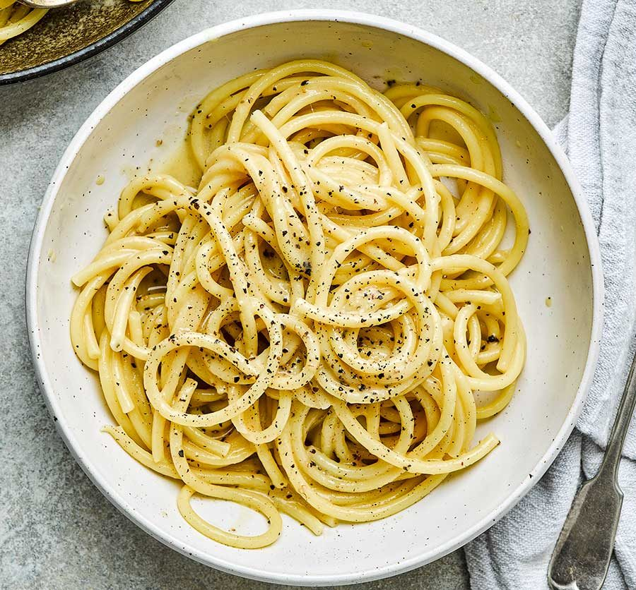

Home
Cacio e Pepe

Cacio e Pepe is the One Dish You Don't Want to Miss
Cacio e pepe is a simple yet delicious Italian pasta dish that requires just a few ingredients. Here's how you can make it:
Ingredients
- Pasta, traditionally spaghetti (200g or about 7 oz for two servings)
- Pecorino Romano cheese, finely grated (1 cup)
- Freshly cracked black pepper (2 teaspoons, or to taste)
- Salt (for the pasta water)
Steps:
- Boil the Pasta:
- Bring a large pot of water to a boil. Add salt once it's boiling.
- Cook the pasta until al dente, typically about 1 minute less than the package instructions. Spaghetti usually takes around 8-10 minutes.
- Toast the Pepper:
- While the pasta is cooking, toast the black pepper in a large pan over medium heat until fragrant (about 1 minute).
- Reserve Pasta Water:
- Before draining the pasta, reserve about 1 cup of the pasta cooking water. This starchy water is key to creating a smooth sauce.
- Combine Pasta and Pepper:
- Add a splash (about ¼ cup) of the reserved pasta water to the pan with the toasted pepper.
- Add the drained pasta to the pan. Toss the pasta with tongs to coat it in the pepper-infused water.
- Add Cheese:
- Remove the pan from the heat. Add about three-quarters of the cheese to the pasta, along with a splash more of the pasta water.
- Toss or stir vigorously to combine. The cheese, pepper, and pasta water should come together to form a creamy sauce that coats the pasta. Add more pasta water if the sauce seems too thick or isn't coming together smoothly.
- Toss and Serve:
- Add and adjust the seasoning, adding more cheese or pepper if desired.
- Serve immediately, garnished with the remaining cheese and additional cracked pepper if you like.
Tips:
The key to a smooth sauce is the pasta water and vigorous stirring. The starch in the water emulsifies with the cheese, creating a creamy sauce without any actual cream.
Be careful not to overheat the cheese, as it can become grainy or clumpy. It's best to remove the pan from the heat before adding the cheese.
Using good quality Pecorino Romano and freshly cracked black pepper can make a big difference in the flavor of the dish.
Enjoy your cacio e pepe!